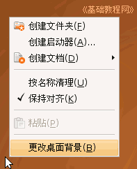
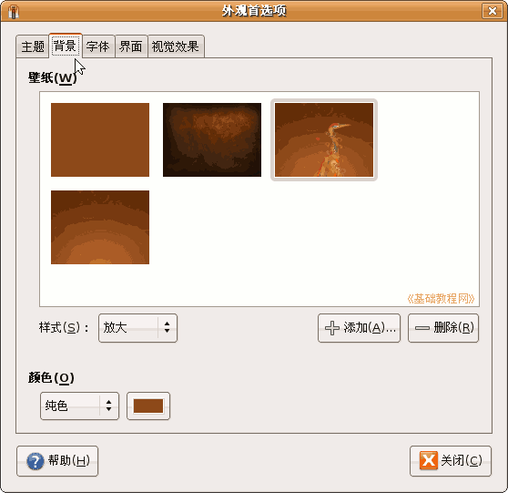
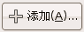
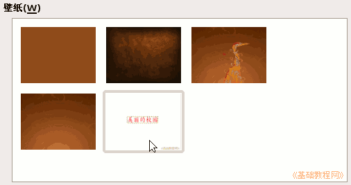
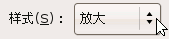
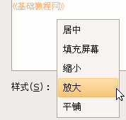
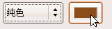
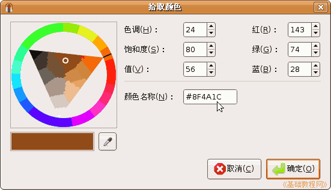

电脑操作基础
作者：TeliuTe 来源：基础教程网
九、桌面和屏保 返回目录 下一课一个干净整洁的桌面，有利于我们操作电脑，如何设置一个漂亮的背景，我们来看一个练习；
1、桌面背景
1）在桌面空白处点右键，在出来的菜单里选“更改桌面背景”命令，出来一个对话框面板；

2）在出来的“外观”面板上边有一排标签，第二个就是“背景”，其他还有主题、字体、界面、效果等；

3）点右边的“添加”按钮，出来一个“添加壁纸”对话框，找到自己的图片文件夹，选择一幅图片，点“打开”；

4）这时桌面背景就改成选中的图片了，点下边的“样式”按钮，可以选择放大还是平铺等；

5）选择中间“壁纸”里的第一个“无壁纸”，桌面是默认的棕黄色，接着可以点下边的“纯色”按钮旁边的颜色块，选择其他颜色；

可以在左边色彩环里选，也可以用下面的吸管，还可以在中间的颜色名称里直接输入，例如经典的蓝色桌面颜色名称是 #396DA5
6）点“确定”以后，就可以完成桌面背景色的修改；
本节学习了的设置桌面背景的基本操作，如果你成功地完成了练习，请继续学习下一课内容；本教程由86团学校TeliuTe制作|著作权所有
基础教程网：http://teliute.org/
美丽的校园……
转载和引用本站内容，请保留作者和本站链接。